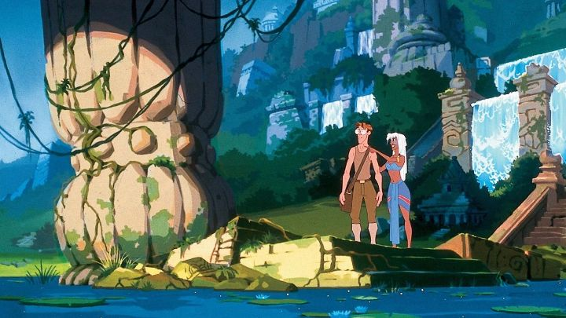

"Atlantis - The Lost Empire" seemed to be an exciting, but different, direction for Disney Animation Studios. Increasingly, the company was avoiding fairy tales in favor of male-audience-focused adventure stories, and "Atlantis" was an original adventure in the style of Jules Verne and H. G. Wells. Early marketing gave renewed interest in the fabled continent of Atlantis, a mythical land that was swallowed by the sea, forever lost in the watery depths. There were new documentaries and tv specials. Disney released books a couple months before the movie, including a movie-encyclopedia that gave some hints on the invented culture and new language the production team invented for the story. This was all with trailers that never confirmed if the crew of explorers would even find the fabled city: exactly what they'd find was kept secret for as long as possible. As a kid, I even bought a "Junior Novelization" of the book, and read it before the movie's premiere: that's how invested I was. And after finally seeing the movie, my first thought as a kid was... "the book was better."Of course, the book was pretty well the same as the movie. The writing and dialogue is actually pretty strong, and the plot is spot on for pulp science fiction. The problem I had was with the acting and pacing for the film. Lines are delivered quickly, like a 1950's musical where actors snap five lines in a conversation without breathing in between. Everyone delivers their puns too quickly to feel natural, and the viewer isn't given any time to stop and appreciate each word: by the time you've gotten a joke, three more passed you by. It's as though the production team took what they learned from "The Emperor's New Groove" (which released just six months earlier) and it's unusually fast comedy, and said "let's apply that to a serious adventure." If you don't mind watching at about 0.5x the speed, there's still a lot to take in with this ambitious story. Milo Thatch is the underdog protagonist, a linguist with a passion for the history of the Atlantis myth, stuck as a boiler-man in the basement of the local museum. He's certain that the key to the location of Atlantis is written in the Shepherd's Journal, and that he knows where the book artifact is located, but is unable to get any proprietors to take him seriously. Except one that takes notice. Milo is whisked away to meet with an eccentric millionaire, Mr. Whitmore, an old acquaintance of Milo's grandfather, who was also an explorer. Impressed by Milo's determination, Whitmore reveals he's found the Journal, and is prepared to send out a massive expedition, with Milo as the official translator and guide for the book. He agrees, and the adventure sets off in a massive submarine and hundreds of crew, not knowing what dangers might await. If successful, they expect to find museum artifacts, and possibly information regarding the power source that used to provide the city's advanced technology. They might not be prepared to think that the city, and its inhabitants, might still be alive...I was a sucker for books like "20,000 Leagues," "Around the World in 80 Days," and "Journey to the Center of the Earth" around this age, so I was pleased with the story from start to finish. Unlike other Disney movies, the tone feels more suited to adult audiences, or perhaps mature children. For example, most of the crew doesn't survive the journey before they find Atlantis, and the capable first-mate Helga is introduced in a silk-dress and a smooth demeanor, like a James Bond girl or Jessica Rabbit. This is actually a positive, for even as a child, I hated when movies talked down to cater to a younger audience, and this was a good midway space. Milo's persnickety and nerd-ish personality helps add some goofy humor along the way, while also serving his character development (he's quickly bullied by the other crew for his lack of practical experience, both in missions or life in general, but eventually wins their approval).  "Atlantis" sports a fun cast of characters. The main crew is made of "the best of the best," each one from different parts of the world, and each more eccentric than the last. My personal favorite was Vinny, the demolition expert, but there's also health doctor Sweet, street-smart mechanic Audrey, an animal-like man named Moliere, and an old woman named Mrs. Packard running the comms. And Helga and Commander Rourke, the two most-suited for leading the gang. Everyone gets banter with each other, some already familar with the backgrounds of their mates. But of course, when the crew finally finds Atlantis (past the halfway point of the movie), things open up even more. The island still exists and has a living culture of people, all living underground for thousnads of years since the Great Flood. It's beautifully realized, and has the right mixture of practical considerations (making up what people might eat or wear in the culture) and magical elements, like how crystals provide a healing and technological power that drives the city. Of course, the drives newly revealed motivations for some of the crew, and makes for a fun final battle. Kida, the princess of Atlantis, is also a really fun character, eager to ask Milo about the upper world just as much as he is to ask about Atlantis, but also athletic enough to fight and defend her people. Clearly, the production team put a lot of love into the design of the characters, Atlantis itself, and the general industrial-age feel of blue/grey rusted metal and copper and stone. The characters might be a little too clean and stylized though, again feeling like a successor to "The Emperor's New Groove" in the wrong ways. And towards the end, it felt like the team was running out of visual ideas to convey the climax. CGI-use for larger enemies and objects also don't blend all that great with the 2D characters. A lot about the movie's style and characters reminded me of a Don Bluth or Dreamworks animated film than a proper Disney one. "Atlantis - The Lost Empire" has a soft spot in my heart. It's a flawed movie, but it's also a love letter to pulp adventure stories (a rare genre for Disney), and it deserves to be discovered.
- "Ani" More reviews can be found at : https://2danicritic.github.io/ Previous review: review_Assassination_Classroom Next review: review_Attack_on_Titan_-_Season_1